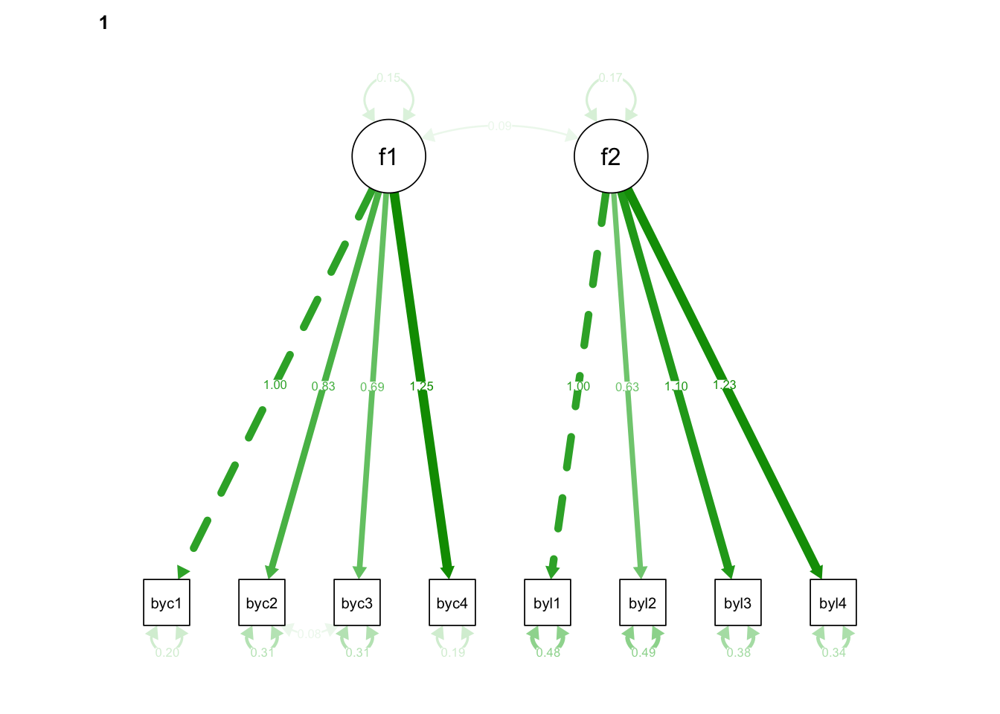
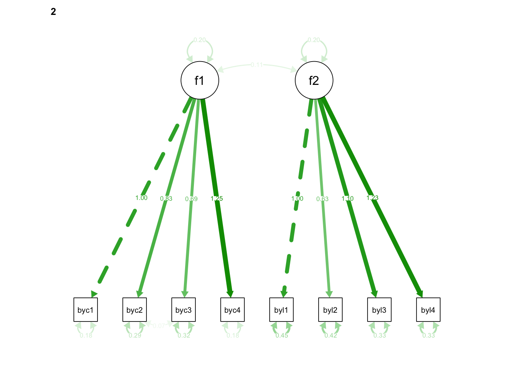

library(lavaan); library(semPlot)6 Multigroup Confirmatory Factor Analysis
6.1 Syntax - R
6.1.1 Analysis with data from single groups
NELS.MALE.corr <- '
1
0.331 1
0.277 0.416 1
0.482 0.37 0.31 1
0.203 0.162 0.141 0.227 1
0.057 0.161 0.096 0.123 0.242 1
0.207 0.144 0.137 0.236 0.302 0.196 1
0.211 0.188 0.172 0.26 0.293 0.235 0.401 1'
NELS.MALE.SDs <- c(0.586, 0.643, 0.620, 0.653, 0.804, 0.748, 0.763, 0.766)
NELS.FEMALE.corr <- '
1
0.418 1
0.34 0.439 1
0.581 0.431 0.364 1
0.223 0.209 0.169 0.282 1
0.075 0.158 0.121 0.155 0.276 1
0.233 0.197 0.192 0.281 0.338 0.231 1
0.269 0.249 0.215 0.333 0.358 0.251 0.465 1'
NELS.FEMALE.SDs <- c(0.616, 0.650, 0.642, 0.693, 0.805, 0.703, 0.754, 0.796)
NELS.MALE.cov <- getCov(NELS.MALE.corr, sds = NELS.MALE.SDs, names = c(paste0('byconf', 1:4, sep=""), paste0('byloc', 1:4, sep="")))Warning: 'getCov' is deprecated.
Use 'lav_getcov' instead.
See help("Deprecated")NELS.FEMALE.cov <- getCov(NELS.FEMALE.corr, sds = NELS.FEMALE.SDs, names = c(paste0('byconf', 1:4, sep=""), paste0('byloc', 1:4, sep="")))
NELS.cfa.model <-
paste0('f1 =~ ', paste0('byconf', 1:4, collapse=' + '), ' \n',
' f2 =~ ', paste0('byloc', 1:4, collapse=' + '), ' \n',
' byconf2 ~~ byconf3')
NELS.MALE.fit <- cfa(NELS.cfa.model, sample.cov = NELS.MALE.cov, sample.nobs = 5312)
NELS.FEMALE.fit <- cfa(NELS.cfa.model, sample.cov = NELS.FEMALE.cov, sample.nobs = 6008)
summary(NELS.MALE.fit, fit.measures = TRUE, standardized = TRUE, rsquare = TRUE) lavaan 0.6-21 ended normally after 33 iterations
Estimator ML
Optimization method NLMINB
Number of model parameters 18
Number of observations 5312
Model Test User Model:
Test statistic 146.970
Degrees of freedom 18
P-value (Chi-square) 0.000
Model Test Baseline Model:
Test statistic 6651.699
Degrees of freedom 28
P-value 0.000
User Model versus Baseline Model:
Comparative Fit Index (CFI) 0.981
Tucker-Lewis Index (TLI) 0.970
Loglikelihood and Information Criteria:
Loglikelihood user model (H0) -41500.792
Loglikelihood unrestricted model (H1) -41427.307
Akaike (AIC) 83037.584
Bayesian (BIC) 83155.983
Sample-size adjusted Bayesian (SABIC) 83098.785
Root Mean Square Error of Approximation:
RMSEA 0.037
90 Percent confidence interval - lower 0.031
90 Percent confidence interval - upper 0.042
P-value H_0: RMSEA <= 0.050 1.000
P-value H_0: RMSEA >= 0.080 0.000
Standardized Root Mean Square Residual:
SRMR 0.022
Parameter Estimates:
Standard errors Standard
Information Expected
Information saturated (h1) model Structured
Latent Variables:
Estimate Std.Err z-value P(>|z|) Std.lv Std.all
f1 =~
byconf1 1.000 0.379 0.647
byconf2 0.863 0.031 27.486 0.000 0.327 0.509
byconf3 0.701 0.029 23.820 0.000 0.266 0.428
byconf4 1.272 0.040 31.424 0.000 0.482 0.738
f2 =~
byloc1 1.000 0.412 0.512
byloc2 0.667 0.036 18.716 0.000 0.274 0.367
byloc3 1.115 0.045 24.712 0.000 0.459 0.602
byloc4 1.179 0.047 24.971 0.000 0.485 0.634
Covariances:
Estimate Std.Err z-value P(>|z|) Std.lv Std.all
.byconf2 ~~
.byconf3 0.079 0.005 15.304 0.000 0.079 0.255
f1 ~~
f2 0.085 0.004 18.978 0.000 0.546 0.546
Variances:
Estimate Std.Err z-value P(>|z|) Std.lv Std.all
.byconf1 0.200 0.006 35.342 0.000 0.200 0.582
.byconf2 0.306 0.007 43.856 0.000 0.306 0.741
.byconf3 0.314 0.007 46.432 0.000 0.314 0.817
.byconf4 0.194 0.007 25.998 0.000 0.194 0.455
.byloc1 0.477 0.011 42.099 0.000 0.477 0.738
.byloc2 0.484 0.010 47.493 0.000 0.484 0.865
.byloc3 0.371 0.010 36.188 0.000 0.371 0.638
.byloc4 0.351 0.010 33.480 0.000 0.351 0.599
f1 0.144 0.007 21.119 0.000 1.000 1.000
f2 0.169 0.011 15.846 0.000 1.000 1.000
R-Square:
Estimate
byconf1 0.418
byconf2 0.259
byconf3 0.183
byconf4 0.545
byloc1 0.262
byloc2 0.135
byloc3 0.362
byloc4 0.401summary(NELS.FEMALE.fit, fit.measures = TRUE, standardized = TRUE, rsquare = TRUE) lavaan 0.6-21 ended normally after 31 iterations
Estimator ML
Optimization method NLMINB
Number of model parameters 18
Number of observations 6008
Model Test User Model:
Test statistic 198.307
Degrees of freedom 18
P-value (Chi-square) 0.000
Model Test Baseline Model:
Test statistic 10198.456
Degrees of freedom 28
P-value 0.000
User Model versus Baseline Model:
Comparative Fit Index (CFI) 0.982
Tucker-Lewis Index (TLI) 0.972
Loglikelihood and Information Criteria:
Loglikelihood user model (H0) -46343.263
Loglikelihood unrestricted model (H1) -46244.110
Akaike (AIC) 92722.527
Bayesian (BIC) 92843.142
Sample-size adjusted Bayesian (SABIC) 92785.943
Root Mean Square Error of Approximation:
RMSEA 0.041
90 Percent confidence interval - lower 0.036
90 Percent confidence interval - upper 0.046
P-value H_0: RMSEA <= 0.050 0.998
P-value H_0: RMSEA >= 0.080 0.000
Standardized Root Mean Square Residual:
SRMR 0.024
Parameter Estimates:
Standard errors Standard
Information Expected
Information saturated (h1) model Structured
Latent Variables:
Estimate Std.Err z-value P(>|z|) Std.lv Std.all
f1 =~
byconf1 1.000 0.445 0.722
byconf2 0.820 0.022 36.510 0.000 0.365 0.561
byconf3 0.677 0.022 30.855 0.000 0.301 0.469
byconf4 1.240 0.028 43.702 0.000 0.552 0.796
f2 =~
byloc1 1.000 0.441 0.548
byloc2 0.604 0.027 22.120 0.000 0.267 0.379
byloc3 1.091 0.035 30.827 0.000 0.482 0.639
byloc4 1.261 0.040 31.500 0.000 0.556 0.699
Covariances:
Estimate Std.Err z-value P(>|z|) Std.lv Std.all
.byconf2 ~~
.byconf3 0.073 0.005 15.686 0.000 0.073 0.240
f1 ~~
f2 0.112 0.005 23.313 0.000 0.571 0.571
Variances:
Estimate Std.Err z-value P(>|z|) Std.lv Std.all
.byconf1 0.181 0.005 36.091 0.000 0.181 0.478
.byconf2 0.289 0.006 47.312 0.000 0.289 0.685
.byconf3 0.321 0.006 50.052 0.000 0.321 0.780
.byconf4 0.176 0.007 26.934 0.000 0.176 0.366
.byloc1 0.453 0.010 45.301 0.000 0.453 0.700
.byloc2 0.423 0.008 51.184 0.000 0.423 0.856
.byloc3 0.336 0.009 39.152 0.000 0.336 0.592
.byloc4 0.324 0.010 33.420 0.000 0.324 0.512
f1 0.198 0.007 27.642 0.000 1.000 1.000
f2 0.195 0.010 19.176 0.000 1.000 1.000
R-Square:
Estimate
byconf1 0.522
byconf2 0.315
byconf3 0.220
byconf4 0.634
byloc1 0.300
byloc2 0.144
byloc3 0.408
byloc4 0.4886.1.2 Analysis with data from both groups
For multiple group analysis, “sample.cov” should be a list with a variance-covariance matrix of each group, and “sample.nobs” should be a list or a vector with the number of observations for each group. By default, the same model is fitted in all groups without any equality constraints on the model parameters
6.1.2.1 both groups, no constraints
NELS.twogroup.fit <- cfa(NELS.cfa.model, sample.cov = list(NELS.MALE.cov, NELS.FEMALE.cov), sample.nobs = c(5312,6008))
summary(NELS.twogroup.fit, fit.measures = TRUE, standardized = TRUE, rsquare = TRUE)lavaan 0.6-21 ended normally after 55 iterations
Estimator ML
Optimization method NLMINB
Number of model parameters 36
Number of observations per group:
Group 1 5312
Group 2 6008
Model Test User Model:
Test statistic 345.277
Degrees of freedom 36
P-value (Chi-square) 0.000
Test statistic for each group:
Group 1 146.970
Group 2 198.307
Model Test Baseline Model:
Test statistic 16850.155
Degrees of freedom 56
P-value 0.000
User Model versus Baseline Model:
Comparative Fit Index (CFI) 0.982
Tucker-Lewis Index (TLI) 0.971
Loglikelihood and Information Criteria:
Loglikelihood user model (H0) -87844.056
Loglikelihood unrestricted model (H1) -87671.417
Akaike (AIC) 175760.111
Bayesian (BIC) 176024.147
Sample-size adjusted Bayesian (SABIC) 175909.743
Root Mean Square Error of Approximation:
RMSEA 0.039
90 Percent confidence interval - lower 0.035
90 Percent confidence interval - upper 0.043
P-value H_0: RMSEA <= 0.050 1.000
P-value H_0: RMSEA >= 0.080 0.000
Standardized Root Mean Square Residual:
SRMR 0.023
Parameter Estimates:
Standard errors Standard
Information Expected
Information saturated (h1) model Structured
Group 1 [Group 1]:
Latent Variables:
Estimate Std.Err z-value P(>|z|) Std.lv Std.all
f1 =~
byconf1 1.000 0.379 0.647
byconf2 0.863 0.031 27.486 0.000 0.327 0.509
byconf3 0.701 0.029 23.820 0.000 0.266 0.428
byconf4 1.272 0.040 31.424 0.000 0.482 0.738
f2 =~
byloc1 1.000 0.412 0.512
byloc2 0.667 0.036 18.716 0.000 0.274 0.367
byloc3 1.115 0.045 24.711 0.000 0.459 0.602
byloc4 1.179 0.047 24.971 0.000 0.485 0.634
Covariances:
Estimate Std.Err z-value P(>|z|) Std.lv Std.all
.byconf2 ~~
.byconf3 0.079 0.005 15.304 0.000 0.079 0.255
f1 ~~
f2 0.085 0.004 18.978 0.000 0.546 0.546
Variances:
Estimate Std.Err z-value P(>|z|) Std.lv Std.all
.byconf1 0.200 0.006 35.342 0.000 0.200 0.582
.byconf2 0.306 0.007 43.856 0.000 0.306 0.741
.byconf3 0.314 0.007 46.432 0.000 0.314 0.817
.byconf4 0.194 0.007 25.998 0.000 0.194 0.455
.byloc1 0.477 0.011 42.099 0.000 0.477 0.738
.byloc2 0.484 0.010 47.493 0.000 0.484 0.865
.byloc3 0.371 0.010 36.188 0.000 0.371 0.638
.byloc4 0.351 0.010 33.480 0.000 0.351 0.599
f1 0.144 0.007 21.119 0.000 1.000 1.000
f2 0.169 0.011 15.846 0.000 1.000 1.000
R-Square:
Estimate
byconf1 0.418
byconf2 0.259
byconf3 0.183
byconf4 0.545
byloc1 0.262
byloc2 0.135
byloc3 0.362
byloc4 0.401
Group 2 [Group 2]:
Latent Variables:
Estimate Std.Err z-value P(>|z|) Std.lv Std.all
f1 =~
byconf1 1.000 0.445 0.722
byconf2 0.820 0.022 36.510 0.000 0.365 0.561
byconf3 0.677 0.022 30.855 0.000 0.301 0.469
byconf4 1.240 0.028 43.702 0.000 0.552 0.796
f2 =~
byloc1 1.000 0.441 0.548
byloc2 0.604 0.027 22.120 0.000 0.267 0.379
byloc3 1.091 0.035 30.827 0.000 0.482 0.639
byloc4 1.261 0.040 31.500 0.000 0.556 0.699
Covariances:
Estimate Std.Err z-value P(>|z|) Std.lv Std.all
.byconf2 ~~
.byconf3 0.073 0.005 15.686 0.000 0.073 0.240
f1 ~~
f2 0.112 0.005 23.313 0.000 0.571 0.571
Variances:
Estimate Std.Err z-value P(>|z|) Std.lv Std.all
.byconf1 0.181 0.005 36.091 0.000 0.181 0.478
.byconf2 0.289 0.006 47.312 0.000 0.289 0.685
.byconf3 0.321 0.006 50.052 0.000 0.321 0.780
.byconf4 0.176 0.007 26.934 0.000 0.176 0.366
.byloc1 0.453 0.010 45.301 0.000 0.453 0.700
.byloc2 0.423 0.008 51.184 0.000 0.423 0.856
.byloc3 0.336 0.009 39.152 0.000 0.336 0.592
.byloc4 0.324 0.010 33.420 0.000 0.324 0.512
f1 0.198 0.007 27.642 0.000 1.000 1.000
f2 0.195 0.010 19.176 0.000 1.000 1.000
R-Square:
Estimate
byconf1 0.522
byconf2 0.315
byconf3 0.220
byconf4 0.634
byloc1 0.300
byloc2 0.144
byloc3 0.408
byloc4 0.4886.1.2.2 constrain factor loadings (metric invariance)
NELS.twogroup.fit.metric <- cfa(NELS.cfa.model, sample.cov = list(NELS.MALE.cov, NELS.FEMALE.cov), sample.nobs = c(5312,6008), group.equal = "loadings")
summary(NELS.twogroup.fit.metric, fit.measures = TRUE, standardized = TRUE, rsquare = TRUE, modindices = TRUE)Warning: lavaan->modificationIndices():
the modindices() function ignores equality constraints; use lavTestScore()
to assess the impact of releasing one or multiple constraints.lavaan 0.6-21 ended normally after 38 iterations
Estimator ML
Optimization method NLMINB
Number of model parameters 36
Number of equality constraints 6
Number of observations per group:
Group 1 5312
Group 2 6008
Model Test User Model:
Test statistic 354.073
Degrees of freedom 42
P-value (Chi-square) 0.000
Test statistic for each group:
Group 1 152.399
Group 2 201.674
Model Test Baseline Model:
Test statistic 16850.155
Degrees of freedom 56
P-value 0.000
User Model versus Baseline Model:
Comparative Fit Index (CFI) 0.981
Tucker-Lewis Index (TLI) 0.975
Loglikelihood and Information Criteria:
Loglikelihood user model (H0) -87848.453
Loglikelihood unrestricted model (H1) -87671.417
Akaike (AIC) 175756.907
Bayesian (BIC) 175976.936
Sample-size adjusted Bayesian (SABIC) 175881.600
Root Mean Square Error of Approximation:
RMSEA 0.036
90 Percent confidence interval - lower 0.033
90 Percent confidence interval - upper 0.040
P-value H_0: RMSEA <= 0.050 1.000
P-value H_0: RMSEA >= 0.080 0.000
Standardized Root Mean Square Residual:
SRMR 0.024
Parameter Estimates:
Standard errors Standard
Information Expected
Information saturated (h1) model Structured
Group 1 [Group 1]:
Latent Variables:
Estimate Std.Err z-value P(>|z|) Std.lv Std.all
f1 =~
byconf1 1.000 0.384 0.654
byconf2 (.p2.) 0.835 0.018 45.707 0.000 0.321 0.501
byconf3 (.p3.) 0.685 0.018 39.002 0.000 0.263 0.425
byconf4 (.p4.) 1.251 0.023 53.805 0.000 0.481 0.736
f2 =~
byloc1 1.000 0.409 0.509
byloc2 (.p6.) 0.628 0.022 28.972 0.000 0.257 0.345
byloc3 (.p7.) 1.101 0.028 39.507 0.000 0.450 0.592
byloc4 (.p8.) 1.228 0.031 40.163 0.000 0.502 0.652
Covariances:
Estimate Std.Err z-value P(>|z|) Std.lv Std.all
.byconf2 ~~
.byconf3 0.080 0.005 16.041 0.000 0.080 0.257
f1 ~~
f2 0.086 0.004 22.131 0.000 0.545 0.545
Variances:
Estimate Std.Err z-value P(>|z|) Std.lv Std.all
.byconf1 0.198 0.005 38.071 0.000 0.198 0.572
.byconf2 0.308 0.007 45.649 0.000 0.308 0.749
.byconf3 0.314 0.007 47.520 0.000 0.314 0.819
.byconf4 0.195 0.006 30.236 0.000 0.195 0.458
.byloc1 0.479 0.011 44.102 0.000 0.479 0.741
.byloc2 0.488 0.010 48.755 0.000 0.488 0.881
.byloc3 0.375 0.009 39.720 0.000 0.375 0.649
.byloc4 0.342 0.010 35.160 0.000 0.342 0.575
f1 0.148 0.005 27.846 0.000 1.000 1.000
f2 0.167 0.008 21.458 0.000 1.000 1.000
R-Square:
Estimate
byconf1 0.428
byconf2 0.251
byconf3 0.181
byconf4 0.542
byloc1 0.259
byloc2 0.119
byloc3 0.351
byloc4 0.425
Group 2 [Group 2]:
Latent Variables:
Estimate Std.Err z-value P(>|z|) Std.lv Std.all
f1 =~
byconf1 1.000 0.442 0.719
byconf2 (.p2.) 0.835 0.018 45.707 0.000 0.369 0.566
byconf3 (.p3.) 0.685 0.018 39.002 0.000 0.303 0.471
byconf4 (.p4.) 1.251 0.023 53.805 0.000 0.552 0.797
f2 =~
byloc1 1.000 0.443 0.550
byloc2 (.p6.) 0.628 0.022 28.972 0.000 0.278 0.394
byloc3 (.p7.) 1.101 0.028 39.507 0.000 0.488 0.645
byloc4 (.p8.) 1.228 0.031 40.163 0.000 0.544 0.687
Covariances:
Estimate Std.Err z-value P(>|z|) Std.lv Std.all
.byconf2 ~~
.byconf3 0.073 0.005 15.777 0.000 0.073 0.239
f1 ~~
f2 0.112 0.004 25.255 0.000 0.571 0.571
Variances:
Estimate Std.Err z-value P(>|z|) Std.lv Std.all
.byconf1 0.183 0.005 38.036 0.000 0.183 0.483
.byconf2 0.289 0.006 47.749 0.000 0.289 0.680
.byconf3 0.321 0.006 50.418 0.000 0.321 0.778
.byconf4 0.175 0.006 28.604 0.000 0.175 0.365
.byloc1 0.452 0.010 46.178 0.000 0.452 0.697
.byloc2 0.421 0.008 51.230 0.000 0.421 0.845
.byloc3 0.334 0.008 40.208 0.000 0.334 0.584
.byloc4 0.331 0.009 36.474 0.000 0.331 0.528
f1 0.195 0.006 30.645 0.000 1.000 1.000
f2 0.196 0.009 22.733 0.000 1.000 1.000
R-Square:
Estimate
byconf1 0.517
byconf2 0.320
byconf3 0.222
byconf4 0.635
byloc1 0.303
byloc2 0.155
byloc3 0.416
byloc4 0.472
Modification Indices:
lhs op rhs block group level mi epc sepc.lv sepc.all sepc.nox
1 f1 =~ byconf1 1 1 1 0.992 -0.035 -0.013 -0.023 -0.023
2 f2 =~ byloc1 1 1 1 0.001 -0.002 -0.001 -0.001 -0.001
3 f1 =~ byconf1 2 2 1 0.992 0.035 0.015 0.025 0.025
4 f2 =~ byloc1 2 2 1 0.001 0.002 0.001 0.001 0.001
5 f1 =~ byloc1 1 1 1 7.415 0.099 0.038 0.048 0.048
6 f1 =~ byloc2 1 1 1 1.455 -0.041 -0.016 -0.021 -0.021
7 f1 =~ byloc3 1 1 1 0.171 -0.015 -0.006 -0.007 -0.007
8 f1 =~ byloc4 1 1 1 1.388 -0.043 -0.017 -0.022 -0.022
9 f2 =~ byconf1 1 1 1 5.214 -0.057 -0.023 -0.040 -0.040
10 f2 =~ byconf2 1 1 1 1.531 0.032 0.013 0.020 0.020
11 f2 =~ byconf3 1 1 1 1.644 0.032 0.013 0.021 0.021
12 f2 =~ byconf4 1 1 1 0.150 0.011 0.005 0.007 0.007
13 byconf1 ~~ byconf2 1 1 1 0.103 0.001 0.001 0.005 0.005
14 byconf1 ~~ byconf3 1 1 1 0.042 -0.001 -0.001 -0.003 -0.003
15 byconf1 ~~ byconf4 1 1 1 0.546 0.005 0.005 0.023 0.023
16 byconf1 ~~ byloc1 1 1 1 3.609 0.010 0.010 0.032 0.032
17 byconf1 ~~ byloc2 1 1 1 40.513 -0.031 -0.031 -0.101 -0.101
18 byconf1 ~~ byloc3 1 1 1 0.896 0.005 0.005 0.017 0.017
19 byconf1 ~~ byloc4 1 1 1 2.638 -0.008 -0.008 -0.030 -0.030
20 byconf2 ~~ byconf4 1 1 1 0.056 -0.001 -0.001 -0.005 -0.005
21 byconf2 ~~ byloc1 1 1 1 0.224 0.003 0.003 0.007 0.007
22 byconf2 ~~ byloc2 1 1 1 40.886 0.035 0.035 0.090 0.090
23 byconf2 ~~ byloc3 1 1 1 7.154 -0.014 -0.014 -0.041 -0.041
24 byconf2 ~~ byloc4 1 1 1 0.013 0.001 0.001 0.002 0.002
25 byconf3 ~~ byconf4 1 1 1 0.466 -0.003 -0.003 -0.013 -0.013
26 byconf3 ~~ byloc1 1 1 1 0.261 0.003 0.003 0.007 0.007
27 byconf3 ~~ byloc2 1 1 1 0.043 -0.001 -0.001 -0.003 -0.003
28 byconf3 ~~ byloc3 1 1 1 0.012 -0.001 -0.001 -0.002 -0.002
29 byconf3 ~~ byloc4 1 1 1 2.491 0.008 0.008 0.025 0.025
30 byconf4 ~~ byloc1 1 1 1 0.954 0.005 0.005 0.018 0.018
31 byconf4 ~~ byloc2 1 1 1 1.090 -0.006 -0.006 -0.018 -0.018
32 byconf4 ~~ byloc3 1 1 1 0.001 0.000 0.000 0.001 0.001
33 byconf4 ~~ byloc4 1 1 1 0.021 0.001 0.001 0.003 0.003
34 byloc1 ~~ byloc2 1 1 1 37.675 0.046 0.046 0.095 0.095
35 byloc1 ~~ byloc3 1 1 1 0.019 -0.001 -0.001 -0.003 -0.003
36 byloc1 ~~ byloc4 1 1 1 35.121 -0.050 -0.050 -0.122 -0.122
37 byloc2 ~~ byloc3 1 1 1 4.045 -0.014 -0.014 -0.033 -0.033
38 byloc2 ~~ byloc4 1 1 1 0.219 0.003 0.003 0.008 0.008
39 byloc3 ~~ byloc4 1 1 1 11.328 0.029 0.029 0.082 0.082
40 f1 =~ byloc1 2 2 1 7.771 0.084 0.037 0.046 0.046
41 f1 =~ byloc2 2 2 1 16.414 -0.109 -0.048 -0.068 -0.068
42 f1 =~ byloc3 2 2 1 8.436 -0.084 -0.037 -0.049 -0.049
43 f1 =~ byloc4 2 2 1 8.086 0.088 0.039 0.049 0.049
44 f2 =~ byconf1 2 2 1 24.080 -0.111 -0.049 -0.080 -0.080
45 f2 =~ byconf2 2 2 1 2.203 0.034 0.015 0.023 0.023
46 f2 =~ byconf3 2 2 1 5.679 0.055 0.025 0.038 0.038
47 f2 =~ byconf4 2 2 1 3.915 0.053 0.024 0.034 0.034
48 byconf1 ~~ byconf2 2 2 1 5.722 0.010 0.010 0.042 0.042
49 byconf1 ~~ byconf3 2 2 1 0.088 -0.001 -0.001 -0.005 -0.005
50 byconf1 ~~ byconf4 2 2 1 15.224 0.027 0.027 0.149 0.149
51 byconf1 ~~ byloc1 2 2 1 0.283 -0.002 -0.002 -0.008 -0.008
52 byconf1 ~~ byloc2 2 2 1 57.623 -0.032 -0.032 -0.115 -0.115
53 byconf1 ~~ byloc3 2 2 1 0.703 -0.003 -0.003 -0.014 -0.014
54 byconf1 ~~ byloc4 2 2 1 1.048 -0.004 -0.004 -0.018 -0.018
55 byconf2 ~~ byconf4 2 2 1 16.943 -0.020 -0.020 -0.088 -0.088
56 byconf2 ~~ byloc1 2 2 1 2.122 0.007 0.007 0.020 0.020
57 byconf2 ~~ byloc2 2 2 1 18.095 0.020 0.020 0.057 0.057
58 byconf2 ~~ byloc3 2 2 1 5.209 -0.010 -0.010 -0.033 -0.033
59 byconf2 ~~ byloc4 2 2 1 1.252 0.005 0.005 0.017 0.017
60 byconf3 ~~ byconf4 2 2 1 1.919 -0.006 -0.006 -0.027 -0.027
61 byconf3 ~~ byloc1 2 2 1 0.165 -0.002 -0.002 -0.006 -0.006
62 byconf3 ~~ byloc2 2 2 1 1.191 0.005 0.005 0.014 0.014
63 byconf3 ~~ byloc3 2 2 1 3.918 0.009 0.009 0.028 0.028
64 byconf3 ~~ byloc4 2 2 1 0.992 0.005 0.005 0.015 0.015
65 byconf4 ~~ byloc1 2 2 1 6.377 0.013 0.013 0.045 0.045
66 byconf4 ~~ byloc2 2 2 1 0.035 -0.001 -0.001 -0.003 -0.003
67 byconf4 ~~ byloc3 2 2 1 1.394 -0.005 -0.005 -0.022 -0.022
68 byconf4 ~~ byloc4 2 2 1 2.222 0.007 0.007 0.030 0.030
69 byloc1 ~~ byloc2 2 2 1 55.136 0.048 0.048 0.110 0.110
70 byloc1 ~~ byloc3 2 2 1 7.479 -0.020 -0.020 -0.051 -0.051
71 byloc1 ~~ byloc4 2 2 1 20.270 -0.035 -0.035 -0.092 -0.092
72 byloc2 ~~ byloc3 2 2 1 5.065 -0.014 -0.014 -0.036 -0.036
73 byloc2 ~~ byloc4 2 2 1 5.493 -0.015 -0.015 -0.040 -0.040
74 byloc3 ~~ byloc4 2 2 1 32.756 0.047 0.047 0.143 0.143Plot the path diagram
semPaths(NELS.twogroup.fit.metric, "est")

6.1.2.3 compare nested models
anova(NELS.twogroup.fit, NELS.twogroup.fit.metric)
Chi-Squared Difference Test
Df AIC BIC Chisq Chisq diff RMSEA Df diff
NELS.twogroup.fit 36 175760 176024 345.28
NELS.twogroup.fit.metric 42 175757 175977 354.07 8.7955 0.0090729 6
Pr(>Chisq)
NELS.twogroup.fit
NELS.twogroup.fit.metric 0.1854lavTestLRT(NELS.twogroup.fit, NELS.twogroup.fit.metric)
Chi-Squared Difference Test
Df AIC BIC Chisq Chisq diff RMSEA Df diff
NELS.twogroup.fit 36 175760 176024 345.28
NELS.twogroup.fit.metric 42 175757 175977 354.07 8.7955 0.0090729 6
Pr(>Chisq)
NELS.twogroup.fit
NELS.twogroup.fit.metric 0.18546.1.2.4 use modindices() function to release constraints across groups
By default, the modindices() function will only consider nonfree parameters (those fixed at 0 or 1). Parameters that are constrained to be equal across groups are still free parameters. Set the argument “free.remove = FALSE” for releasing constraints across groups.
mi <- modindices(NELS.twogroup.fit.metric, free.remove = FALSE) Warning: lavaan->modindices():
the modindices() function ignores equality constraints; use lavTestScore()
to assess the impact of releasing one or multiple constraints.mi[mi$op == "=~",] #request modification indices for factor loadings only lhs op rhs block group level mi epc sepc.lv sepc.all sepc.nox
1 f1 =~ byconf1 1 1 1 0.992 -0.035 -0.013 -0.023 -0.023
2 f1 =~ byconf2 1 1 1 0.365 0.014 0.005 0.008 0.008
3 f1 =~ byconf3 1 1 1 0.001 0.001 0.000 0.001 0.001
4 f1 =~ byconf4 1 1 1 0.008 0.002 0.001 0.001 0.001
5 f2 =~ byloc1 1 1 1 0.001 -0.002 -0.001 -0.001 -0.001
6 f2 =~ byloc2 1 1 1 1.939 0.040 0.016 0.022 0.022
7 f2 =~ byloc3 1 1 1 0.460 0.018 0.007 0.010 0.010
8 f2 =~ byloc4 1 1 1 1.453 -0.031 -0.013 -0.016 -0.016
21 f1 =~ byconf1 2 2 1 0.992 0.035 0.015 0.025 0.025
22 f1 =~ byconf2 2 2 1 0.215 -0.008 -0.004 -0.006 -0.006
23 f1 =~ byconf3 2 2 1 0.001 -0.001 0.000 0.000 0.000
24 f1 =~ byconf4 2 2 1 0.005 -0.001 -0.001 -0.001 -0.001
25 f2 =~ byloc1 2 2 1 0.001 0.002 0.001 0.001 0.001
26 f2 =~ byloc2 2 2 1 1.185 -0.025 -0.011 -0.015 -0.015
27 f2 =~ byloc3 2 2 1 0.298 -0.012 -0.005 -0.007 -0.007
28 f2 =~ byloc4 2 2 1 1.022 0.022 0.010 0.012 0.012
47 f1 =~ byloc1 1 1 1 7.415 0.099 0.038 0.048 0.048
48 f1 =~ byloc2 1 1 1 1.455 -0.041 -0.016 -0.021 -0.021
49 f1 =~ byloc3 1 1 1 0.171 -0.015 -0.006 -0.007 -0.007
50 f1 =~ byloc4 1 1 1 1.388 -0.043 -0.017 -0.022 -0.022
51 f2 =~ byconf1 1 1 1 5.214 -0.057 -0.023 -0.040 -0.040
52 f2 =~ byconf2 1 1 1 1.531 0.032 0.013 0.020 0.020
53 f2 =~ byconf3 1 1 1 1.644 0.032 0.013 0.021 0.021
54 f2 =~ byconf4 1 1 1 0.150 0.011 0.005 0.007 0.007
82 f1 =~ byloc1 2 2 1 7.771 0.084 0.037 0.046 0.046
83 f1 =~ byloc2 2 2 1 16.414 -0.109 -0.048 -0.068 -0.068
84 f1 =~ byloc3 2 2 1 8.436 -0.084 -0.037 -0.049 -0.049
85 f1 =~ byloc4 2 2 1 8.086 0.088 0.039 0.049 0.049
86 f2 =~ byconf1 2 2 1 24.080 -0.111 -0.049 -0.080 -0.080
87 f2 =~ byconf2 2 2 1 2.203 0.034 0.015 0.023 0.023
88 f2 =~ byconf3 2 2 1 5.679 0.055 0.025 0.038 0.038
89 f2 =~ byconf4 2 2 1 3.915 0.053 0.024 0.034 0.034NELS.twogroup.fit.metric.partial <- cfa(NELS.cfa.model, sample.cov = list(NELS.MALE.cov, NELS.FEMALE.cov), sample.nobs = c(5312,6008), group.equal = "loadings", group.partial = c("f2=~byloc2")) #release one factor loading constraint
summary(NELS.twogroup.fit.metric.partial, fit.measures = TRUE, standardized = TRUE, rsquare = TRUE,)lavaan 0.6-21 ended normally after 43 iterations
Estimator ML
Optimization method NLMINB
Number of model parameters 36
Number of equality constraints 5
Number of observations per group:
Group 1 5312
Group 2 6008
Model Test User Model:
Test statistic 350.532
Degrees of freedom 41
P-value (Chi-square) 0.000
Test statistic for each group:
Group 1 150.269
Group 2 200.264
Model Test Baseline Model:
Test statistic 16850.155
Degrees of freedom 56
P-value 0.000
User Model versus Baseline Model:
Comparative Fit Index (CFI) 0.982
Tucker-Lewis Index (TLI) 0.975
Loglikelihood and Information Criteria:
Loglikelihood user model (H0) -87846.683
Loglikelihood unrestricted model (H1) -87671.417
Akaike (AIC) 175755.366
Bayesian (BIC) 175982.731
Sample-size adjusted Bayesian (SABIC) 175884.216
Root Mean Square Error of Approximation:
RMSEA 0.037
90 Percent confidence interval - lower 0.033
90 Percent confidence interval - upper 0.040
P-value H_0: RMSEA <= 0.050 1.000
P-value H_0: RMSEA >= 0.080 0.000
Standardized Root Mean Square Residual:
SRMR 0.024
Parameter Estimates:
Standard errors Standard
Information Expected
Information saturated (h1) model Structured
Group 1 [Group 1]:
Latent Variables:
Estimate Std.Err z-value P(>|z|) Std.lv Std.all
f1 =~
byconf1 1.000 0.384 0.654
byconf2 (.p2.) 0.835 0.018 45.711 0.000 0.321 0.501
byconf3 (.p3.) 0.685 0.018 39.002 0.000 0.263 0.425
byconf4 (.p4.) 1.251 0.023 53.806 0.000 0.481 0.736
f2 =~
byloc1 1.000 0.406 0.506
byloc2 0.675 0.033 20.264 0.000 0.274 0.367
byloc3 (.p7.) 1.100 0.028 39.509 0.000 0.447 0.589
byloc4 (.p8.) 1.229 0.031 40.182 0.000 0.499 0.649
Covariances:
Estimate Std.Err z-value P(>|z|) Std.lv Std.all
.byconf2 ~~
.byconf3 0.080 0.005 16.033 0.000 0.080 0.257
f1 ~~
f2 0.085 0.004 22.058 0.000 0.545 0.545
Variances:
Estimate Std.Err z-value P(>|z|) Std.lv Std.all
.byconf1 0.198 0.005 38.074 0.000 0.198 0.573
.byconf2 0.308 0.007 45.644 0.000 0.308 0.749
.byconf3 0.314 0.007 47.518 0.000 0.314 0.819
.byconf4 0.195 0.006 30.233 0.000 0.195 0.458
.byloc1 0.479 0.011 44.167 0.000 0.479 0.744
.byloc2 0.484 0.010 47.514 0.000 0.484 0.866
.byloc3 0.377 0.009 39.855 0.000 0.377 0.653
.byloc4 0.343 0.010 35.250 0.000 0.343 0.579
f1 0.148 0.005 27.845 0.000 1.000 1.000
f2 0.165 0.008 21.186 0.000 1.000 1.000
R-Square:
Estimate
byconf1 0.427
byconf2 0.251
byconf3 0.181
byconf4 0.542
byloc1 0.256
byloc2 0.134
byloc3 0.347
byloc4 0.421
Group 2 [Group 2]:
Latent Variables:
Estimate Std.Err z-value P(>|z|) Std.lv Std.all
f1 =~
byconf1 1.000 0.442 0.719
byconf2 (.p2.) 0.835 0.018 45.711 0.000 0.369 0.566
byconf3 (.p3.) 0.685 0.018 39.002 0.000 0.303 0.471
byconf4 (.p4.) 1.251 0.023 53.806 0.000 0.552 0.797
f2 =~
byloc1 1.000 0.445 0.552
byloc2 0.601 0.026 23.218 0.000 0.267 0.380
byloc3 (.p7.) 1.100 0.028 39.509 0.000 0.489 0.647
byloc4 (.p8.) 1.229 0.031 40.182 0.000 0.546 0.689
Covariances:
Estimate Std.Err z-value P(>|z|) Std.lv Std.all
.byconf2 ~~
.byconf3 0.073 0.005 15.779 0.000 0.073 0.239
f1 ~~
f2 0.112 0.004 25.240 0.000 0.572 0.572
Variances:
Estimate Std.Err z-value P(>|z|) Std.lv Std.all
.byconf1 0.183 0.005 38.038 0.000 0.183 0.483
.byconf2 0.289 0.006 47.749 0.000 0.289 0.680
.byconf3 0.321 0.006 50.418 0.000 0.321 0.778
.byconf4 0.175 0.006 28.612 0.000 0.175 0.365
.byloc1 0.452 0.010 46.096 0.000 0.452 0.696
.byloc2 0.423 0.008 51.157 0.000 0.423 0.856
.byloc3 0.333 0.008 40.035 0.000 0.333 0.582
.byloc4 0.330 0.009 36.170 0.000 0.330 0.525
f1 0.195 0.006 30.645 0.000 1.000 1.000
f2 0.198 0.009 22.647 0.000 1.000 1.000
R-Square:
Estimate
byconf1 0.517
byconf2 0.320
byconf3 0.222
byconf4 0.635
byloc1 0.304
byloc2 0.144
byloc3 0.418
byloc4 0.4756.1.2.5 constrain loadings, residual variances, and residual covariances
The value for “group.equal” should be a vector of character strings. They can be one or more of the following: “loadings”, “intercepts”, “means”, “thresholds”, “regressions”, “residuals”, “residual.covariances”, “lv.variances” or “lv.covariances”, specifying the pattern of equality constraints across multiple groups.
NELS.twogroup.fit.metric.constrain.residuals.residualcovariances <- cfa(NELS.cfa.model, sample.cov = list(NELS.MALE.cov, NELS.FEMALE.cov), sample.nobs = c(5312,6008), group.equal = c("loadings", "residuals", "residual.covariances"))
summary(NELS.twogroup.fit.metric.constrain.residuals.residualcovariances, fit.measures = TRUE, standardized = TRUE, rsquare = TRUE)lavaan 0.6-21 ended normally after 35 iterations
Estimator ML
Optimization method NLMINB
Number of model parameters 36
Number of equality constraints 15
Number of observations per group:
Group 1 5312
Group 2 6008
Model Test User Model:
Test statistic 419.715
Degrees of freedom 51
P-value (Chi-square) 0.000
Test statistic for each group:
Group 1 185.577
Group 2 234.138
Model Test Baseline Model:
Test statistic 16850.155
Degrees of freedom 56
P-value 0.000
User Model versus Baseline Model:
Comparative Fit Index (CFI) 0.978
Tucker-Lewis Index (TLI) 0.976
Loglikelihood and Information Criteria:
Loglikelihood user model (H0) -87881.275
Loglikelihood unrestricted model (H1) -87671.417
Akaike (AIC) 175804.549
Bayesian (BIC) 175958.570
Sample-size adjusted Bayesian (SABIC) 175891.835
Root Mean Square Error of Approximation:
RMSEA 0.036
90 Percent confidence interval - lower 0.033
90 Percent confidence interval - upper 0.039
P-value H_0: RMSEA <= 0.050 1.000
P-value H_0: RMSEA >= 0.080 0.000
Standardized Root Mean Square Residual:
SRMR 0.028
Parameter Estimates:
Standard errors Standard
Information Expected
Information saturated (h1) model Structured
Group 1 [Group 1]:
Latent Variables:
Estimate Std.Err z-value P(>|z|) Std.lv Std.all
f1 =~
byconf1 1.000 0.388 0.664
byconf2 (.p2.) 0.837 0.018 45.507 0.000 0.324 0.511
byconf3 (.p3.) 0.687 0.018 38.969 0.000 0.266 0.427
byconf4 (.p4.) 1.252 0.023 53.506 0.000 0.485 0.749
f2 =~
byloc1 1.000 0.413 0.519
byloc2 (.p6.) 0.631 0.022 28.886 0.000 0.261 0.362
byloc3 (.p7.) 1.101 0.028 39.370 0.000 0.455 0.608
byloc4 (.p8.) 1.227 0.031 40.050 0.000 0.507 0.658
Covariances:
Estimate Std.Err z-value P(>|z|) Std.lv Std.all
.byconf2 ~~
.byconf3 (.p9.) 0.076 0.003 21.938 0.000 0.076 0.247
f1 ~~
f2 0.086 0.004 22.086 0.000 0.534 0.534
Variances:
Estimate Std.Err z-value P(>|z|) Std.lv Std.all
.byconf1 (.10.) 0.190 0.004 50.559 0.000 0.190 0.558
.byconf2 (.11.) 0.297 0.005 64.604 0.000 0.297 0.739
.byconf3 (.12.) 0.318 0.005 68.309 0.000 0.318 0.818
.byconf4 (.13.) 0.185 0.005 37.663 0.000 0.185 0.440
.byloc1 (.14.) 0.464 0.008 61.889 0.000 0.464 0.731
.byloc2 (.15.) 0.452 0.006 69.908 0.000 0.452 0.869
.byloc3 (.16.) 0.353 0.007 53.462 0.000 0.353 0.630
.byloc4 (.17.) 0.336 0.007 47.134 0.000 0.336 0.567
f1 0.150 0.005 28.430 0.000 1.000 1.000
f2 0.171 0.008 21.772 0.000 1.000 1.000
R-Square:
Estimate
byconf1 0.442
byconf2 0.261
byconf3 0.182
byconf4 0.560
byloc1 0.269
byloc2 0.131
byloc3 0.370
byloc4 0.433
Group 2 [Group 2]:
Latent Variables:
Estimate Std.Err z-value P(>|z|) Std.lv Std.all
f1 =~
byconf1 1.000 0.439 0.709
byconf2 (.p2.) 0.837 0.018 45.507 0.000 0.367 0.558
byconf3 (.p3.) 0.687 0.018 38.969 0.000 0.301 0.471
byconf4 (.p4.) 1.252 0.023 53.506 0.000 0.549 0.787
f2 =~
byloc1 1.000 0.439 0.542
byloc2 (.p6.) 0.631 0.022 28.886 0.000 0.277 0.381
byloc3 (.p7.) 1.101 0.028 39.370 0.000 0.484 0.631
byloc4 (.p8.) 1.227 0.031 40.050 0.000 0.539 0.681
Covariances:
Estimate Std.Err z-value P(>|z|) Std.lv Std.all
.byconf2 ~~
.byconf3 (.p9.) 0.076 0.003 21.938 0.000 0.076 0.247
f1 ~~
f2 0.112 0.004 25.265 0.000 0.581 0.581
Variances:
Estimate Std.Err z-value P(>|z|) Std.lv Std.all
.byconf1 (.10.) 0.190 0.004 50.559 0.000 0.190 0.497
.byconf2 (.11.) 0.297 0.005 64.604 0.000 0.297 0.688
.byconf3 (.12.) 0.318 0.005 68.309 0.000 0.318 0.778
.byconf4 (.13.) 0.185 0.005 37.663 0.000 0.185 0.380
.byloc1 (.14.) 0.464 0.008 61.889 0.000 0.464 0.706
.byloc2 (.15.) 0.452 0.006 69.908 0.000 0.452 0.855
.byloc3 (.16.) 0.353 0.007 53.462 0.000 0.353 0.601
.byloc4 (.17.) 0.336 0.007 47.134 0.000 0.336 0.537
f1 0.192 0.006 30.451 0.000 1.000 1.000
f2 0.193 0.009 22.666 0.000 1.000 1.000
R-Square:
Estimate
byconf1 0.503
byconf2 0.312
byconf3 0.222
byconf4 0.620
byloc1 0.294
byloc2 0.145
byloc3 0.399
byloc4 0.4636.1.3 CFA with Ordered Categorical Variables – An example from Wang & Su (2013)
NELS.SelfConcept.3waves.dat <- read.fwf("data/NELSSelfConcept3waves.dat",
widths=c(7,4,2,2,11,rep(2,39)),header = FALSE,
col.names = c("id", "status", "race", "gender", "weight", c(paste0('byconf', 1:7, sep=""), paste0('byloc', 1:6, sep=""), paste0('f1conf', 1:7, sep=""), paste0('f1loc', 1:6, sep=""), paste0('f2conf', 1:7, sep=""), paste0('f2loc', 1:6, sep=""))))
#recode 99 as NA for missing values
vars.99.as.missing <- names(NELS.SelfConcept.3waves.dat) %in% c("race", "gender", c(paste0('byconf', 1:7, sep=""), paste0('byloc', 1:6, sep=""),
paste0('f1conf', 1:7, sep=""), paste0('f1loc', 1:6, sep=""),
paste0('f2conf', 1:7, sep=""), paste0('f2loc', 1:6, sep="")))
dat.with.missing <- NELS.SelfConcept.3waves.dat[vars.99.as.missing]
dat.with.missing[dat.with.missing==99] <- NA
#add back variables that has no missing values. Three variables have no missing values: id, status, and weight.
NELS.SelfConcept.3waves.dat.NA.as.missing <- cbind(NELS.SelfConcept.3waves.dat[!vars.99.as.missing],dat.with.missing)
#calcuate total missing values in each column
colSums(is.na(NELS.SelfConcept.3waves.dat.NA.as.missing)) id status weight race gender byconf1 byconf2 byconf3 byconf4 byconf5
0 0 0 987 760 853 981 931 943 952
byconf6 byconf7 byloc1 byloc2 byloc3 byloc4 byloc5 byloc6 f1conf1 f1conf2
945 918 875 901 896 893 917 890 1528 1573
f1conf3 f1conf4 f1conf5 f1conf6 f1conf7 f1loc1 f1loc2 f1loc3 f1loc4 f1loc5
1621 1609 1633 1613 1634 1575 1591 1584 1625 1631
f1loc6 f2conf1 f2conf2 f2conf3 f2conf4 f2conf5 f2conf6 f2conf7 f2loc1 f2loc2
1638 2279 2373 2373 2361 2356 2389 2380 2317 2331
f2loc3 f2loc4 f2loc5 f2loc6
2347 2382 2381 2367 NELS.SelfConcept.3waves.model <-
paste0('f1 =~ ', paste0('byconf', 1:4, collapse=' + '), ' \n',
' f2 =~ ', paste0('byloc', 1:4, collapse=' + '), ' \n',
' f3 =~ ', paste0('f1conf', 1:4, collapse=' + '), ' \n',
' f4 =~ ', paste0('f1loc', 1:4, collapse=' + '), ' \n',
' f5 =~ ', paste0('f2conf', 1:4, collapse=' + '), ' \n',
' f6 =~ ', paste0('f2loc', 1:4, collapse=' + '), ' \n')lavaan uses listwise deletion as the default. FIML can be enabled by specifying the argument missing=“ml” or missing=“fiml”. However, missing = “fiml” or “ml” is not available in the categorical setting. The default estimator for endogenous ordered categorical variables is WLSMV.
NELS.cfa.ordered.categorical.indicators.fit <- cfa(NELS.SelfConcept.3waves.model, data=NELS.SelfConcept.3waves.dat.NA.as.missing, ordered = c(paste0('byconf', 1:7, sep=""), paste0('byloc', 1:6, sep=""),
paste0('f1conf', 1:7, sep=""), paste0('f1loc', 1:6, sep=""), paste0('f2conf', 1:7, sep=""), paste0('f2loc', 1:6, sep="")))
summary(NELS.cfa.ordered.categorical.indicators.fit, fit.measures = TRUE, standardized = TRUE, rsquare = TRUE)lavaan 0.6-21 ended normally after 53 iterations
Estimator DWLS
Optimization method NLMINB
Number of model parameters 111
Used Total
Number of observations 7982 12144
Model Test User Model:
Standard Scaled
Test Statistic 4857.384 6358.479
Degrees of freedom 237 237
P-value (Unknown) NA 0.000
Scaling correction factor 0.770
Shift parameter 53.452
simple second-order correction
Model Test Baseline Model:
Test statistic 294010.963 131370.845
Degrees of freedom 276 276
P-value NA 0.000
Scaling correction factor 2.241
User Model versus Baseline Model:
Comparative Fit Index (CFI) 0.984 0.953
Tucker-Lewis Index (TLI) 0.982 0.946
Robust Comparative Fit Index (CFI) 0.870
Robust Tucker-Lewis Index (TLI) 0.848
Root Mean Square Error of Approximation:
RMSEA 0.049 0.057
90 Percent confidence interval - lower 0.048 0.056
90 Percent confidence interval - upper 0.051 0.058
P-value H_0: RMSEA <= 0.050 0.781 0.000
P-value H_0: RMSEA >= 0.080 0.000 0.000
Robust RMSEA 0.079
90 Percent confidence interval - lower 0.077
90 Percent confidence interval - upper 0.081
P-value H_0: Robust RMSEA <= 0.050 0.000
P-value H_0: Robust RMSEA >= 0.080 0.142
Standardized Root Mean Square Residual:
SRMR 0.043 0.043
Parameter Estimates:
Parameterization Delta
Standard errors Robust.sem
Information Expected
Information saturated (h1) model Unstructured
Latent Variables:
Estimate Std.Err z-value P(>|z|) Std.lv Std.all
f1 =~
byconf1 1.000 0.804 0.804
byconf2 0.857 0.014 60.421 0.000 0.689 0.689
byconf3 0.780 0.015 52.992 0.000 0.627 0.627
byconf4 1.014 0.015 69.772 0.000 0.815 0.815
f2 =~
byloc1 1.000 0.608 0.608
byloc2 0.731 0.026 28.172 0.000 0.445 0.445
byloc3 1.088 0.027 40.686 0.000 0.662 0.662
byloc4 1.191 0.028 41.935 0.000 0.725 0.725
f3 =~
f1conf1 1.000 0.816 0.816
f1conf2 0.950 0.011 87.943 0.000 0.775 0.775
f1conf3 0.885 0.011 78.145 0.000 0.722 0.722
f1conf4 0.993 0.011 91.221 0.000 0.810 0.810
f4 =~
f1loc1 1.000 0.653 0.653
f1loc2 0.750 0.019 38.514 0.000 0.490 0.490
f1loc3 1.113 0.020 56.883 0.000 0.726 0.726
f1loc4 1.194 0.021 57.859 0.000 0.780 0.780
f5 =~
f2conf1 1.000 0.832 0.832
f2conf2 1.004 0.009 114.173 0.000 0.836 0.836
f2conf3 0.966 0.009 107.139 0.000 0.804 0.804
f2conf4 1.016 0.009 110.521 0.000 0.845 0.845
f6 =~
f2loc1 1.000 0.651 0.651
f2loc2 0.825 0.019 42.435 0.000 0.537 0.537
f2loc3 1.187 0.020 58.803 0.000 0.773 0.773
f2loc4 1.247 0.021 59.160 0.000 0.812 0.812
Covariances:
Estimate Std.Err z-value P(>|z|) Std.lv Std.all
f1 ~~
f2 0.282 0.008 33.859 0.000 0.577 0.577
f3 0.380 0.009 42.865 0.000 0.579 0.579
f4 0.183 0.008 23.303 0.000 0.349 0.349
f5 0.314 0.009 35.663 0.000 0.470 0.470
f6 0.145 0.008 18.486 0.000 0.278 0.278
f2 ~~
f3 0.180 0.008 22.709 0.000 0.363 0.363
f4 0.236 0.008 31.124 0.000 0.594 0.594
f5 0.154 0.008 19.334 0.000 0.305 0.305
f6 0.194 0.007 27.343 0.000 0.490 0.490
f3 ~~
f4 0.329 0.008 43.147 0.000 0.618 0.618
f5 0.426 0.008 51.411 0.000 0.627 0.627
f6 0.206 0.008 26.909 0.000 0.388 0.388
f4 ~~
f5 0.219 0.008 27.761 0.000 0.404 0.404
f6 0.266 0.007 35.853 0.000 0.627 0.627
f5 ~~
f6 0.300 0.008 39.674 0.000 0.554 0.554
Thresholds:
Estimate Std.Err z-value P(>|z|) Std.lv Std.all
byconf1|t1 -2.438 0.047 -51.980 0.000 -2.438 -2.438
byconf1|t2 -1.484 0.021 -69.429 0.000 -1.484 -1.484
byconf1|t3 0.399 0.014 27.635 0.000 0.399 0.399
byconf2|t1 -2.307 0.041 -56.283 0.000 -2.307 -2.307
byconf2|t2 -1.509 0.022 -69.550 0.000 -1.509 -1.509
byconf2|t3 0.219 0.014 15.501 0.000 0.219 0.219
byconf3|t1 -2.463 0.048 -51.116 0.000 -2.463 -2.463
byconf3|t2 -1.485 0.021 -69.434 0.000 -1.485 -1.485
byconf3|t3 0.263 0.014 18.536 0.000 0.263 0.263
byconf4|t1 -2.203 0.037 -59.445 0.000 -2.203 -2.203
byconf4|t2 -1.261 0.019 -66.583 0.000 -1.261 -1.261
byconf4|t3 0.380 0.014 26.392 0.000 0.380 0.380
byloc1|t1 -1.725 0.025 -69.015 0.000 -1.725 -1.725
byloc1|t2 -0.948 0.017 -57.170 0.000 -0.948 -0.948
byloc1|t3 0.416 0.014 28.743 0.000 0.416 0.416
byloc2|t1 -2.050 0.032 -63.538 0.000 -2.050 -2.050
byloc2|t2 -1.386 0.020 -68.566 0.000 -1.386 -1.386
byloc2|t3 0.142 0.014 10.115 0.000 0.142 0.142
byloc3|t1 -1.656 0.024 -69.487 0.000 -1.656 -1.656
byloc3|t2 -0.724 0.015 -46.859 0.000 -0.724 -0.724
byloc3|t3 0.939 0.017 56.817 0.000 0.939 0.939
byloc4|t1 -1.742 0.025 -68.859 0.000 -1.742 -1.742
byloc4|t2 -0.998 0.017 -59.079 0.000 -0.998 -0.998
byloc4|t3 0.521 0.015 35.361 0.000 0.521 0.521
f1conf1|t1 -2.285 0.040 -56.973 0.000 -2.285 -2.285
f1conf1|t2 -1.423 0.021 -68.963 0.000 -1.423 -1.423
f1conf1|t3 0.450 0.015 30.933 0.000 0.450 0.450
f1conf2|t1 -2.307 0.041 -56.283 0.000 -2.307 -2.307
f1conf2|t2 -1.474 0.021 -69.367 0.000 -1.474 -1.474
f1conf2|t3 0.406 0.014 28.056 0.000 0.406 0.406
f1conf3|t1 -2.432 0.047 -52.187 0.000 -2.432 -2.432
f1conf3|t2 -1.493 0.021 -69.474 0.000 -1.493 -1.493
f1conf3|t3 0.476 0.015 32.522 0.000 0.476 0.476
f1conf4|t1 -2.125 0.034 -61.635 0.000 -2.125 -2.125
f1conf4|t2 -1.105 0.018 -62.673 0.000 -1.105 -1.105
f1conf4|t3 0.581 0.015 38.927 0.000 0.581 0.581
f1loc1|t1 -1.816 0.027 -68.006 0.000 -1.816 -1.816
f1loc1|t2 -0.824 0.016 -51.809 0.000 -0.824 -0.824
f1loc1|t3 0.652 0.015 43.005 0.000 0.652 0.652
f1loc2|t1 -2.137 0.035 -61.307 0.000 -2.137 -2.137
f1loc2|t2 -1.315 0.019 -67.568 0.000 -1.315 -1.315
f1loc2|t3 0.413 0.014 28.543 0.000 0.413 0.413
f1loc3|t1 -1.904 0.029 -66.613 0.000 -1.904 -1.904
f1loc3|t2 -0.745 0.016 -47.919 0.000 -0.745 -0.745
f1loc3|t3 1.020 0.017 59.889 0.000 1.020 1.020
f1loc4|t1 -1.932 0.029 -66.101 0.000 -1.932 -1.932
f1loc4|t2 -0.910 0.016 -55.629 0.000 -0.910 -0.910
f1loc4|t3 0.804 0.016 50.856 0.000 0.804 0.804
f2conf1|t1 -2.330 0.042 -55.545 0.000 -2.330 -2.330
f2conf1|t2 -1.495 0.022 -69.489 0.000 -1.495 -1.495
f2conf1|t3 0.266 0.014 18.737 0.000 0.266 0.266
f2conf2|t1 -2.229 0.038 -58.689 0.000 -2.229 -2.229
f2conf2|t2 -1.545 0.022 -69.656 0.000 -1.545 -1.545
f2conf2|t3 0.199 0.014 14.116 0.000 0.199 0.199
f2conf3|t1 -2.381 0.044 -53.901 0.000 -2.381 -2.381
f2conf3|t2 -1.591 0.023 -69.675 0.000 -1.591 -1.591
f2conf3|t3 0.268 0.014 18.871 0.000 0.268 0.268
f2conf4|t1 -2.169 0.036 -60.426 0.000 -2.169 -2.169
f2conf4|t2 -1.244 0.019 -66.230 0.000 -1.244 -1.244
f2conf4|t3 0.393 0.014 27.235 0.000 0.393 0.393
f2loc1|t1 -1.700 0.025 -69.223 0.000 -1.700 -1.700
f2loc1|t2 -0.862 0.016 -53.532 0.000 -0.862 -0.862
f2loc1|t3 0.604 0.015 40.277 0.000 0.604 0.604
f2loc2|t1 -2.001 0.031 -64.667 0.000 -2.001 -2.001
f2loc2|t2 -1.346 0.020 -68.050 0.000 -1.346 -1.346
f2loc2|t3 0.385 0.014 26.725 0.000 0.385 0.385
f2loc3|t1 -1.829 0.027 -67.823 0.000 -1.829 -1.829
f2loc3|t2 -0.824 0.016 -51.829 0.000 -0.824 -0.824
f2loc3|t3 0.953 0.017 57.365 0.000 0.953 0.953
f2loc4|t1 -1.839 0.027 -67.676 0.000 -1.839 -1.839
f2loc4|t2 -0.954 0.017 -57.424 0.000 -0.954 -0.954
f2loc4|t3 0.728 0.015 47.051 0.000 0.728 0.728
Variances:
Estimate Std.Err z-value P(>|z|) Std.lv Std.all
.byconf1 0.354 0.354 0.354
.byconf2 0.525 0.525 0.525
.byconf3 0.606 0.606 0.606
.byconf4 0.335 0.335 0.335
.byloc1 0.630 0.630 0.630
.byloc2 0.802 0.802 0.802
.byloc3 0.562 0.562 0.562
.byloc4 0.475 0.475 0.475
.f1conf1 0.335 0.335 0.335
.f1conf2 0.399 0.399 0.399
.f1conf3 0.479 0.479 0.479
.f1conf4 0.344 0.344 0.344
.f1loc1 0.574 0.574 0.574
.f1loc2 0.760 0.760 0.760
.f1loc3 0.473 0.473 0.473
.f1loc4 0.392 0.392 0.392
.f2conf1 0.308 0.308 0.308
.f2conf2 0.302 0.302 0.302
.f2conf3 0.354 0.354 0.354
.f2conf4 0.286 0.286 0.286
.f2loc1 0.576 0.576 0.576
.f2loc2 0.712 0.712 0.712
.f2loc3 0.403 0.403 0.403
.f2loc4 0.341 0.341 0.341
f1 0.646 0.012 52.686 0.000 1.000 1.000
f2 0.370 0.014 26.989 0.000 1.000 1.000
f3 0.665 0.010 64.339 0.000 1.000 1.000
f4 0.426 0.012 35.854 0.000 1.000 1.000
f5 0.692 0.009 76.827 0.000 1.000 1.000
f6 0.424 0.012 35.237 0.000 1.000 1.000
R-Square:
Estimate
byconf1 0.646
byconf2 0.475
byconf3 0.394
byconf4 0.665
byloc1 0.370
byloc2 0.198
byloc3 0.438
byloc4 0.525
f1conf1 0.665
f1conf2 0.601
f1conf3 0.521
f1conf4 0.656
f1loc1 0.426
f1loc2 0.240
f1loc3 0.527
f1loc4 0.608
f2conf1 0.692
f2conf2 0.698
f2conf3 0.646
f2conf4 0.714
f2loc1 0.424
f2loc2 0.288
f2loc3 0.597
f2loc4 0.6596.2 Syntax - Mplus
6.2.1 Analysis with data from single groups
TITLE: Male group
DATA: FILE IS "data\NELSMALE.txt";
TYPE IS CORRELATION STDEVIATIONS;
NOBSERVATIONS ARE 5312;
VARIABLE: NAMES ARE byconf1-byconf4 byloc1-byloc4;
ANALYSIS: ESTIMATOR=ML;
OUTPUT: SAMPSTAT STDYX RESIDUAL;
MODEL:
f1 BY byconf1-byconf4;
f2 BY byloc1-byloc4;
byconf2 WITH byconf3;TITLE: Female group
DATA: FILE IS "data\NELSFEMALE.txt";
TYPE IS CORRELATION STDEVIATIONS;
NOBSERVATIONS ARE 6008;
VARIABLE: NAMES ARE byconf1-byconf4 byloc1-byloc4;
ANALYSIS: ESTIMATOR=ML;
OUTPUT: SAMPSTAT STDYX RESIDUAL;
MODEL:
f1 BY byconf1-byconf4;
f2 BY byloc1-byloc4;
byconf2 WITH byconf3;6.2.2 Analysis with data from both groups
6.2.2.1 both groups, no constraints
TITLE: both groups, no constraints
DATA: FILE IS "data\NELSTWOGROUPS.txt";
TYPE IS CORRELATION STDEVIATIONS;
NOBSERVATIONS ARE 5312 6008;
NGROUPS IS 2;
VARIABLE: NAMES ARE byconf1-byconf4 byloc1-byloc4;
ANALYSIS: ESTIMATOR=ML;
OUTPUT: SAMPSTAT STDYX RESIDUAL;
MODEL:
f1 BY byconf1-byconf4;
f2 BY byloc1-byloc4;
f1 WITH f2;
byconf2 WITH byconf3;
MODEL g2:
f1 BY byconf2-byconf4;
f2 BY byloc2-byloc4;
f1 WITH f2;
byconf2 WITH byconf3;6.2.2.2 constrain factor loadings (metric invariance)
TITLE: both groups, factor loading constraints
DATA: FILE IS "data\NELSTWOGROUPS.txt";
TYPE IS CORRELATION STDEVIATIONS;
NOBSERVATIONS ARE 5312 6008;
NGROUPS IS 2;
VARIABLE: NAMES ARE byconf1-byconf4 byloc1-byloc4;
ANALYSIS: ESTIMATOR=ML;
OUTPUT: SAMPSTAT STDYX MODINDICES(0);
MODEL:
f1 BY byconf1-byconf4;
f2 BY byloc1-byloc4;
f1 WITH f2;
byconf2 WITH byconf3;6.2.2.3 release constraints across groups
Use modification indices and theory as guidelines
TITLE: both groups, factor loading constraints
DATA: FILE IS "data\NELSTWOGROUPS.txt";
TYPE IS CORRELATION STDEVIATIONS;
NOBSERVATIONS ARE 5312 6008;
NGROUPS IS 2;
VARIABLE: NAMES ARE byconf1-byconf4 byloc1-byloc4;
ANALYSIS: ESTIMATOR=ML;
OUTPUT: SAMPSTAT STDYX MODINDICES(0);
MODEL:
f1 BY byconf1-byconf4;
f2 BY byloc1-byloc4;
f1 WITH f2;
byconf2 WITH byconf3;
MODEL g2:
f2 BY loc2*;6.2.2.4 constrain loadings, residual variances, and residual covariances
TITLE: both groups, factor loading and
residual variances and covariances constraints
DATA: FILE IS "data\NELSTWOGROUPS.txt";
TYPE IS CORRELATION STDEVIATIONS;
NOBSERVATIONS ARE 5312 6008;
NGROUPS IS 2;
VARIABLE: NAMES ARE byconf1-byconf4 byloc1-byloc4;
ANALYSIS: ESTIMATOR=ML;
OUTPUT: STDYX;
MODEL:
f1 BY byconf1-byconf4;
f2 BY byloc1-byloc4;
f1 WITH f2;
byconf1 (1);
byconf2 (2);
byconf3 (3);
byconf4 (4);
byloc1 (5);
byloc2 (6);
byloc3 (7);
byloc4 (8);
byconf2 WITH byconf3 (9);6.2.3 CFA with Ordered Categorical Variables – An example from Wang & Su (2013)
TITLE: An example from Wang & Su (2013)
DATA: FILE IS "data\NELSSelfConcept3waves.dat";
FORMAT IS F7 F4 2F2 F11.4 39F2;
VARIABLE: NAMES ARE id status race gender weight
byconf1 byconf2 byconf3 byconf4 byconf5 byconf6 byconf7
byloc1 byloc2 byloc3 byloc4 byloc5 byloc6
f1conf1 f1conf2 f1conf3 f1conf4 f1conf5 f1conf6 f1conf7
f1loc1 f1loc2 f1loc3 f1loc4 f1loc5 f1loc6
f2conf1 f2conf2 f2conf3 f2conf4 f2conf5 f2conf6 f2conf7
f2loc1 f2loc2 f2loc3 f2loc4 f2loc5 f2loc6;
USEVARIABLES ARE byconf1-byconf4 byloc1-byloc4
f1conf1-f1conf4 f1loc1-f1loc4
f2conf1-f2conf4 f2loc1-f2loc4;
CATEGORICAL ARE byconf1-byconf4 byloc1-byloc4
f1conf1-f1conf4 f1loc1-f1loc4
f2conf1-f2conf4 f2loc1-f2loc4;
WEIGHT IS weight;
MISSING ARE race (99) gender (99) byconf1-f2loc6 (99);
ANALYSIS: ESTIMATOR=WLSMV;
OUTPUT: SAMPSTAT STANDARDIZED MODINDICES;
MODEL: f1 BY byconf1-byconf4;
f2 BY byloc1-byloc4;
f3 BY f1conf1-f1conf4;
f4 BY f1loc1-f1loc4;
f5 BY f2conf1-f2conf4;
f6 BY f2loc1-f2loc4;